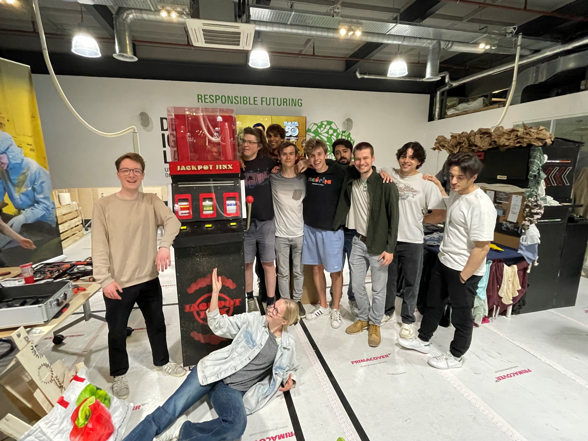
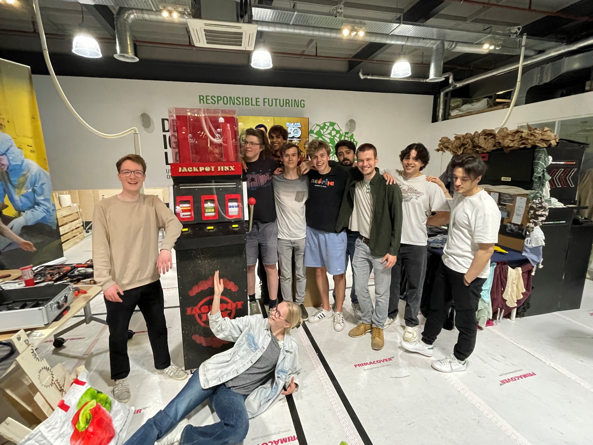

The Biggest project yet.
For the final Creative Technology Y2 Project we made a slotmachine that warns young-adults about the dangers of gambling. This 12-person project (!) is the biggest project I participated in during
Creative Technology.
"The goal of the installation is to inform and warn teenagers and young adults about the risks of gambling and the unavoidable loss of money that results from engaging in gambling activities. The intent is to attract people with a seemingly fun experience, give them a false sense of hope and excitement as they are shown a large stack of money, only to immediately crush this excitement as the money is shredded in front of their eyes. The machine is completely transparent in showing and telling the player how much money you lost, but this is heavily contrasted by the cheerful visuals and audio."
Our Jackpot Jinx machine consists of many wooden pannels that are spraypainted and/or lasercutted. However, the machine also has difficult
coding and mechanics to resemble a real slotmachine. This is how it works.
The player can pull the lever to make the reels start spinning, just like with a real slotmachine. Then the player can press the three yellow buttons to stop the reels, and make a combination.
Our reels are, however, not ordinary reels. The first one contains a country, the second one a casino game, and the last one a year. The combination of these three will result in an amount
of money lost in a specific country, playing a specific game, in a specific year. So for example, a possible outcome of the three reels could
be: China, Sports Betting and 2019.
A big pile of money rises according to the height of the money lost in that country, playing that game, in that year. However, the machine will happily announce this amount as if a
big jackpot was won! But when the big pile of money goes down again, and shreds fly out of the box, it becomes clear that it wasn't a jackpot in winning...
 

The University of Twente wanted the machine after the presentations, so maybe you can play with it on the next open day!